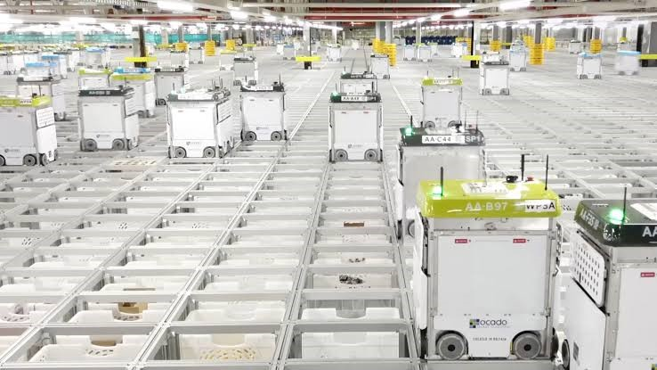

Robots

Introduction
In the following assignment we have chosen to profile a robotic
company from the UK and will be focusing on a singular area of robots within a retail industry due
to its extensive field. The following aims to give an overview of this
IT Technology with some key features such as effects on current workforce.
We have chosen to focus on a single area of robots within an industry due to its extensive field.
By selecting a company / industry it will give the reader a better understanding of
how robots are used,its impact on our daily lives and the potential use in the coming years.
What Does it Do?
The robots I have selected to profile are the Ocado robots.
Ocado is an online supermarket retailer in the United Kingdom,
who are using robots to make online grocery shopping faster (Vincent).
By using robots to perform picking tasks the company saves on labour
and can workday and night at the same cost base. Each robot is approx.
the size of a washing machine and travels around on a grid called the hive.
Currently their UK plant processes 65,000 orders per week and approx. 3.5 million items per week (Vincent).
The robots take products to the packer who is stationary in a
workstation, then the packer packs the shopping items into a shipping box.
In this warehouse there are only two points that there is human interaction.
First point is the unloading of the product and the second is the packing into
the shipping container. The company is working on new Tech that will one day
eliminate one of these the first human interaction with any product.
Ocado has started to develop full automation to reduce any human interaction
within their warehouse facilities.
This company now describes itself as a technology-led, global,
software and robotics platform business, with a strong retail heritage (Tech HQ).
Cutting edge technology has been developed in the form of a picking device that mimics
a human hand that will prevent damage to the product (Ocado).
Technology solutions made up more than 30% of this business revenue in 2019 (Tech HQ).
With the introduction of automated cars and trucks in almost
every market in the world, I can see innovation in having a
full automated system from warehouse end customer with the use of robots and self-driving delivery trucks.
Other developments to streamline the process would be to have
recurring orders auto dispatch from past usage of a product using advanced AI & Machine learning.
This would save time and generate efficiency having smaller orders to pick each time.
What is the Likely Impact
The likely impact of this type of robotics will be less manual labour
jobs in warehousing and transport for humans. It will make roles such as picking,
packing and sortation a resignation to history in the next 20 years.
Manual jobs will become less and less available resulting in a social impact
resulting in higher unemployment around the globe.
This innovation with robots will create highly skilled jobs for
computer and robotic engineers but will also affect lower skilled jobs
with an estimated 17 % of all jobs lost to robots in the coming years (Vincent).
People most affected by robots are generally people in manual
jobs that have a high nature of repetition throughout the workday,
such as attending the same picking location for 5 different orders.
Most likely to change is this tech gets cheaper by the day and soon it
won't just be the large companies such as Ocado that will be rolling it out.
It will be available to the public and smaller companies driving greater competition within the marketplace.
How Will This Affect Us?
It will affect many workers in the transport and warehouse industry.
Automation is becoming more widely adapted in other business
units within many developed companies and it will only be a matter
of time before parts of manned roles become automated and reduction in manual labour jobs.
In our daily life it will affect us by getting products delivered quicker
and cheaper from all retailers who adapt to this robotic technology.
It may also drive a reduction in Co2 emissions if these robots can be solar
powered and as less people will be travelling to work as their jobs have
been replaced by robots this will drive a further reduction. Many families will be directly impacted
by this tech with the reduction in manual labour jobs.
Online ordering driven by robots is here to stay and big
businesses such as Amazon are investing heavily in this type of robots
to reduce work force and speed up processes. It is said the use of robots
inside an Amazon warehouse has increased a pickers productivity by up to 400% (Jason Del Rey).
To summarize the above, we believe that robots are a game changer in all
fields not only in warehousing and transport.
Robots will one day replace almost all of the jobs on the
planet from farming, delivery, cooking and cleaning of our homes.
Each day with the advances to the technology and the robots becoming
smaller and more efficient such as the automatic vacuums in people in their homes.
We will rely less on doing tasks manually and become more reliant on robots.
The only fear of this technology is that when government’s start to try
and weaponized robots to start killing humans in War. We can only hope that
a framework of AI & Robotic law is passed to ensure that this doesn’t happen within our lifetime.
Not all robots will be dangerous but we need to be vigilante as human error
can cause injury or death such as Robert Williams who was the first person in
history to be killed by a Robot in 1978 at the Ford Plant in Michigan (Tucker, 2018).